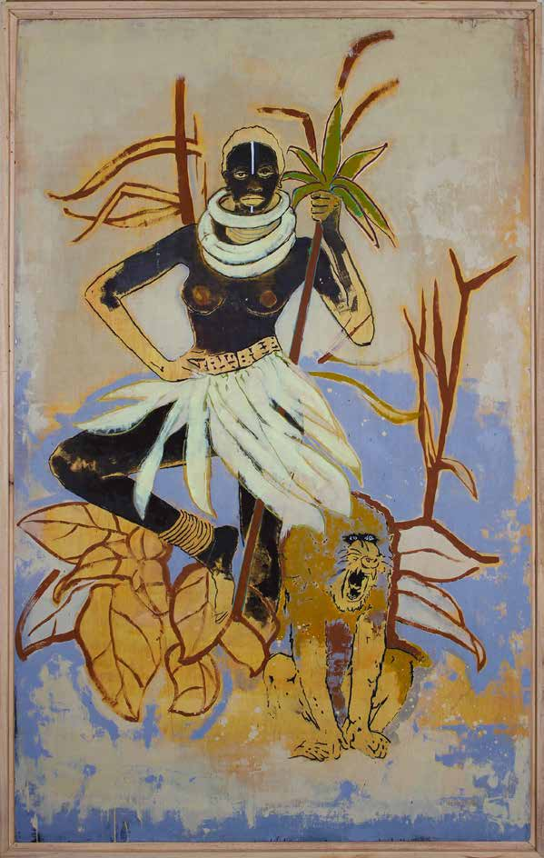
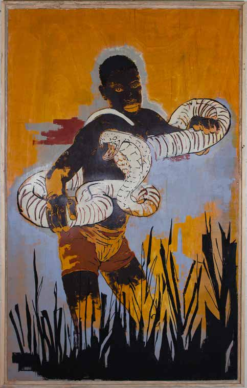
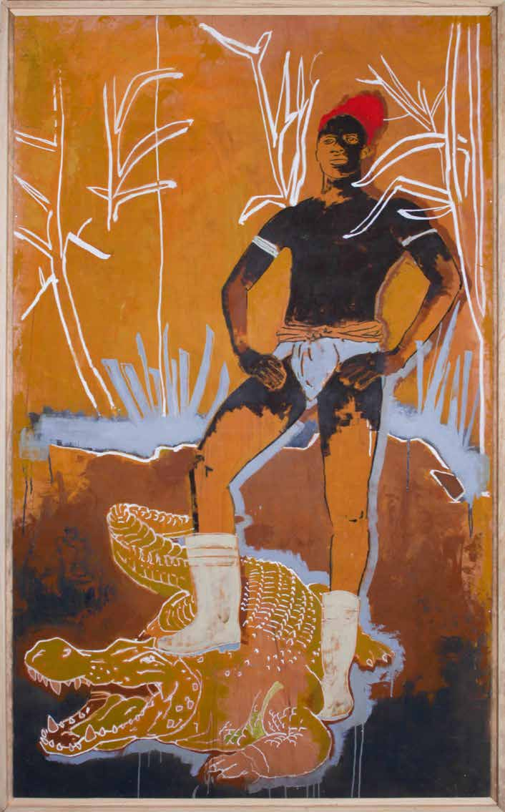
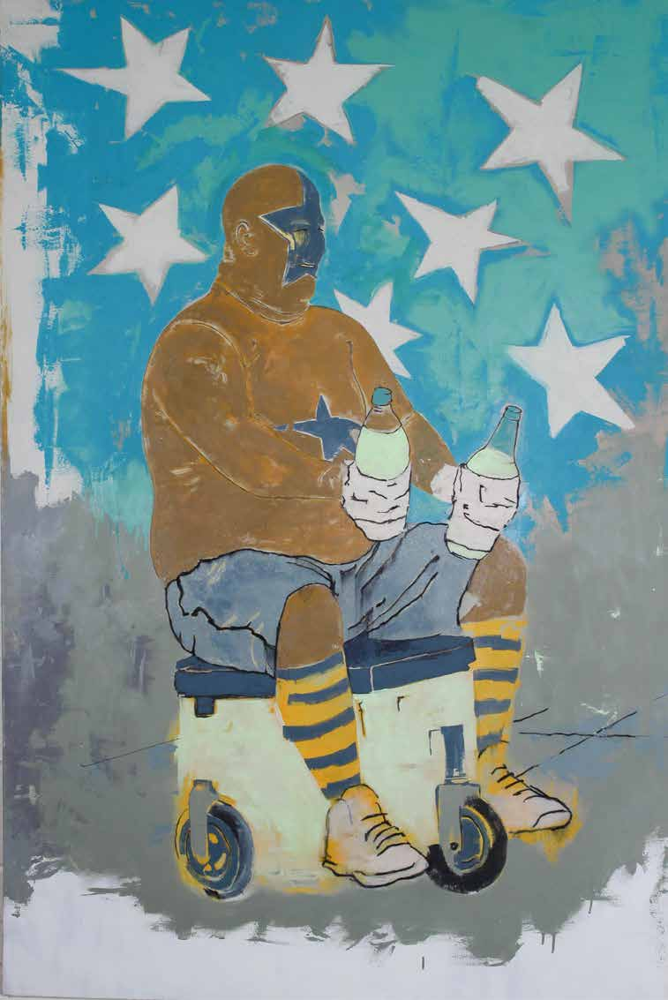
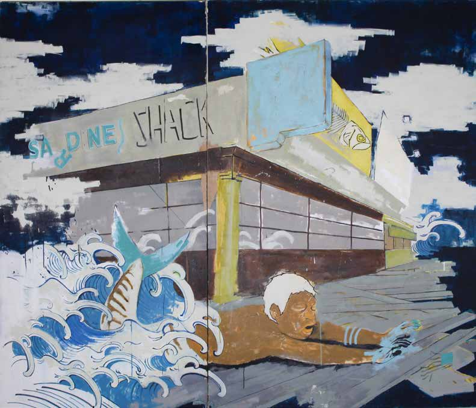
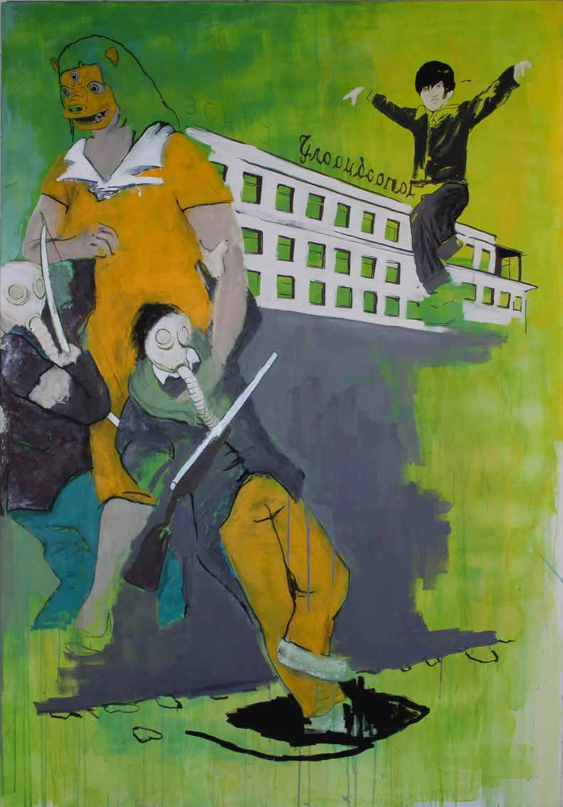

In Memoriam
26 August 1977 — 6 September 2024
Painter · Globetrotter · Luxembourg
The Man
Max Dauphin was born in Luxembourg on 26 August 1977 into a home already alive with creativity — his father was a graphic designer, and it was at the kitchen table, drawing side by side, that Max first fell in love with image-making. That early spark would carry him across continents and through decades of restless, joyful making.
He is survived by his wife and their two children. Those who knew him remember a man of extraordinary warmth — described by colleagues and friends as humble, delicate, radiant, and of extreme kindness, always available and always benevolent.
"A humble, delicate individual — a radiant and human being, of extreme kindness, always available and benevolent."
— Neimënster Cultural Centre, LuxembourgAfter years of roaming the world and absorbing its textures, Max settled in Luxembourg where he built his studio within the Bamhaus Art Collective — a creative home that reflected everything he believed art could be: communal, generous, alive.
He died on 6 September 2024 in Seignosse, in the south of France, in a tragic accident. He was 47 years old.
For his wife
A poem written by Max, in his own words.
The Work
Max painted the world as he lived it — raw, immediate, and full of feeling. His large-format canvases wove together slogans, iconography, and vivid characters: people on the margins, figures from mythology, portraits of strangers encountered in markets and on street corners across six continents.
He had trained in Marseille, where he fell headlong into graffiti culture and urban art — an influence that never left him. Even as his work matured into gallery exhibitions, it kept the energy of the street: urgent, gestural, unashamed of colour. He used whatever materials were locally at hand during his travels, letting place itself become part of the palette.
"The combination of colours and material highlights the playfulness of his characters and emphasises the dynamism of his subjects."
— Reuter Bausch Art GalleryIn 2019, his exhibition Inside Out at Neimënster — sixteen large-format canvases drawn from Carl Jung's theories and mythology — was widely regarded as a career high point: a deeply personal meditation on the inner life made vivid and public.
In 2009, his painting Medusa's Raft received a Special Jury mention at the Francophone Games.

Senegal Series
Mixed technique on canvas
Mixed technique on canvas
Super Women, 2013 · 182 × 121 cm
Mixed technique on canvas
Mixed technique on canvasThe Journey
Max was, above all, a wanderer. He followed his curiosity from country to country, absorbing visual languages wherever he landed, always returning to the canvas with something new.
Studied in Provence; discovered graffiti and street art. Showed his first paintings at age 25.
Group show featuring West African poetry-inspired work; portrait series at the Luxembourg Embassy.
Brush vs. Spray Can — a joint exhibition with graffiti artist Sumo.
Special Jury mention for Medusa's Raft.
Original Is Not Even a Flavor — shown in New York City.
City Spirits — works made using locally found materials, honouring the spirit of place.
Ana Wa Kër Gui? — an African painting series shown at Atelier Céramiques Almadies.
International exhibitions with Chris Neuman and The Mongolian Project.
Inside Out — 16 large-format canvases exploring Jungian psychology and mythology.
Max Dauphin
26 August 1977 · 6 September 2024
He painted life as if colour itself were a kindness — vibrant, generous, unafraid. He saw beauty in the margins, humanity in the overlooked, and brought both onto canvas with a hand that was restless but never careless.
He leaves behind his wife, their two children, a studio full of colour, and the countless lives he touched across the world he roamed.
The work remains.